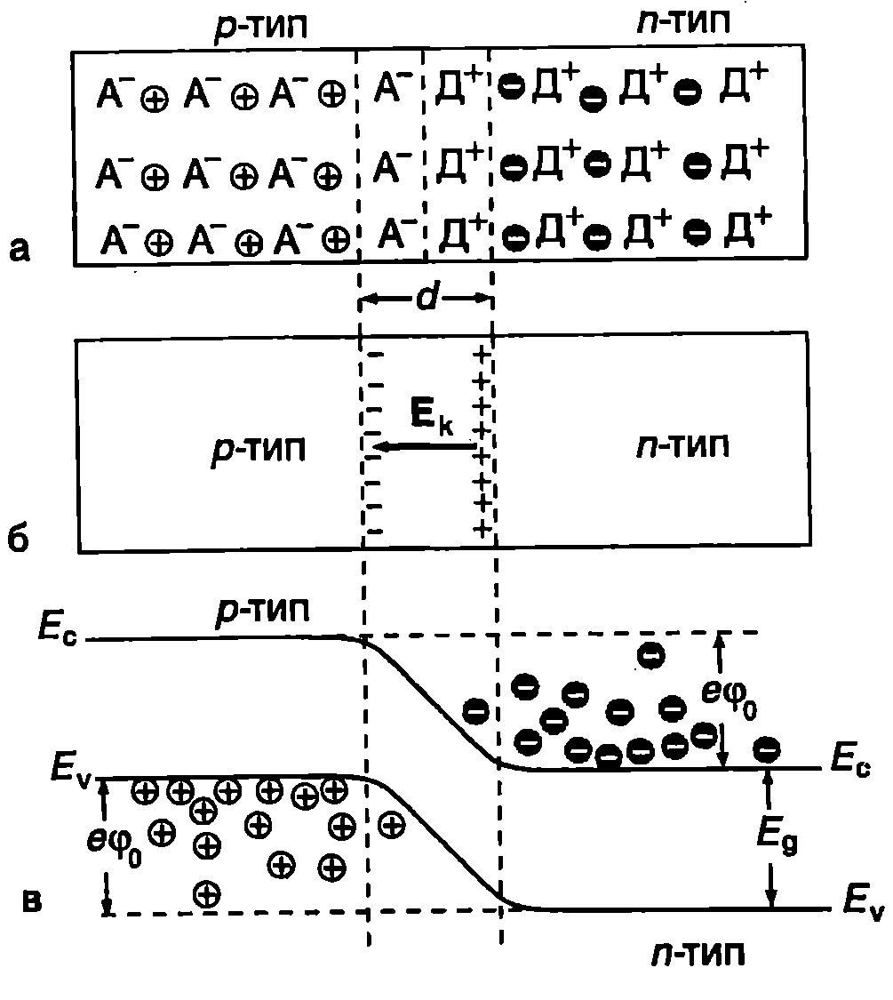
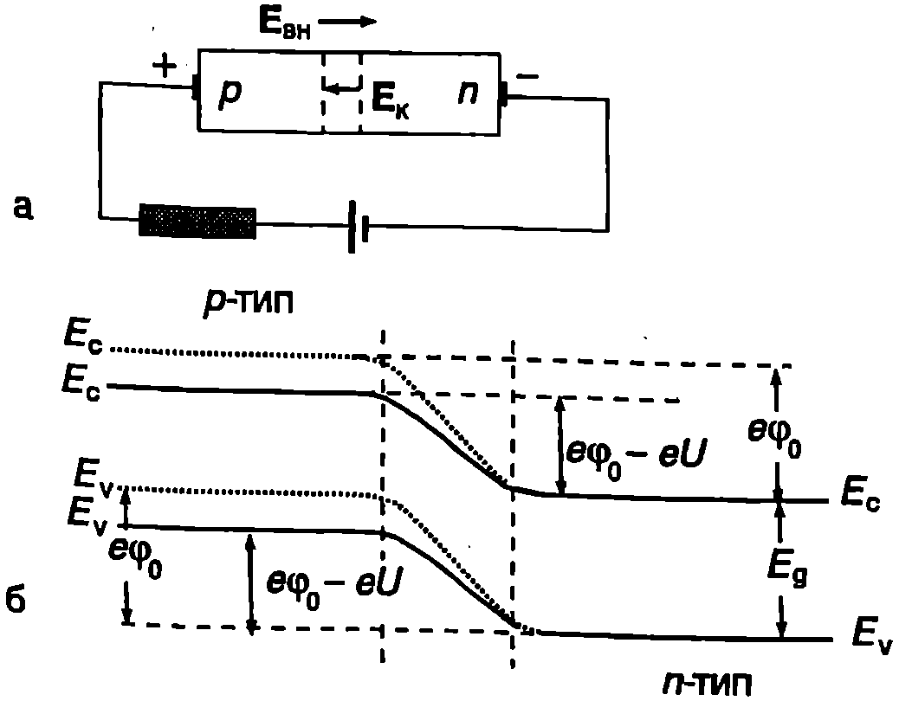
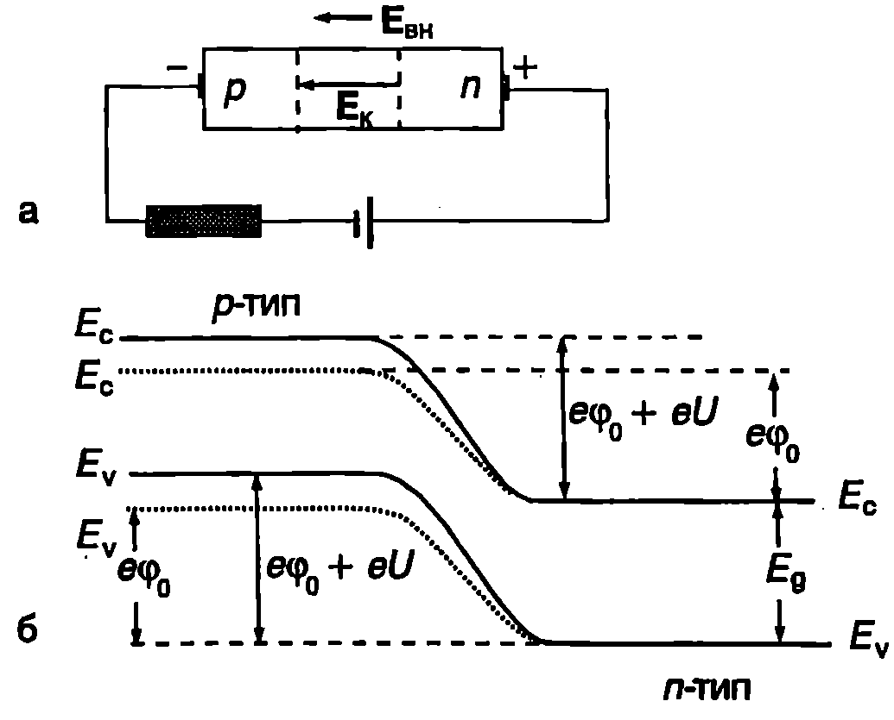
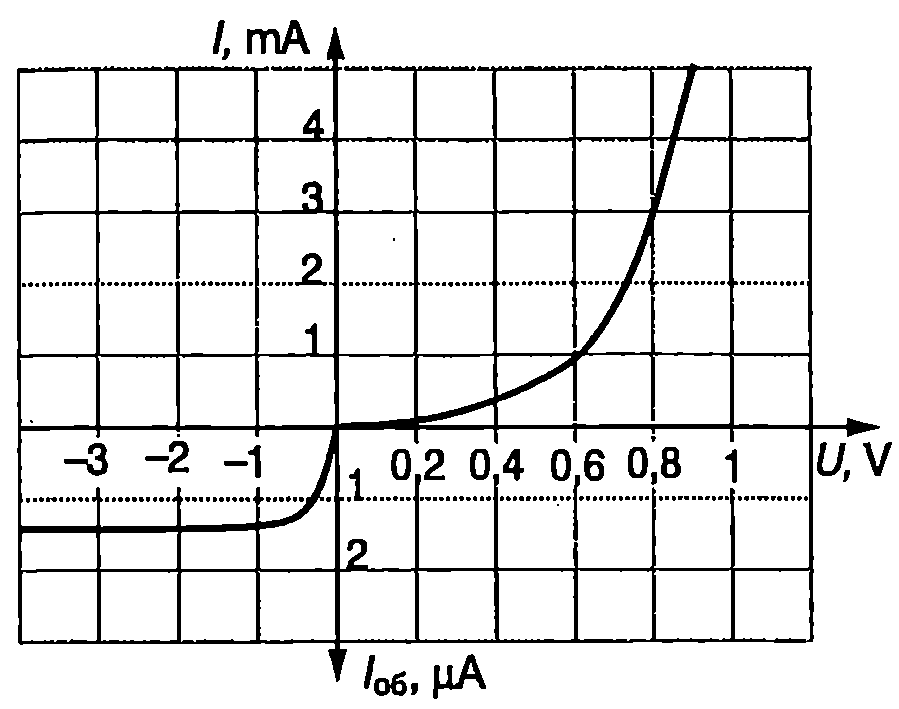

Получаване на $p-n$-преходи
Прогресът на полупроводниковата електроника е свързан преди всичко с използването на контакта между два примесни полупроводника с различен тип проводимост. Този контакт се нарича $p-n$-преход. Получаването му чрез механично притискане на два кристала е невъзможно поради неизбежното замърсяване и големия брой примеси и дефекти на граничните повърхности. През последните 50 години са разработени множество технологии за получаване на качествени $p-n$-преходи. Основната идея е следната: взема се полупроводников кристал от $n$- или от $p$-тип и на определена дълбочина в него се вкарват примеси, които създават проводимост от противоположния тип. Например, ако изходният кристал е от $n$-тип, внасят се акцептори, а в кристалите от $p$-тип донори. Там, където са попаднали допълнителните примесни атоми, типът проводимост на кристала се изменя. На границата между областта с променен тип проводимост и останалата част на кристала (наречена подложка) възниква $p-n$-преход.
$P-n$-преходи се създават, например, чрез дифузия на донорни (акцепторни) примеси в полупроводникови кристали от $p$-тип ($n$-тип). Дълбочината, на която проникват примесите и мястото на $p-n$-прехода се определят от температурата и времето за провеждане на дифузията.
$P-n$-преходи с много малки размери и точно контролируема дълбочина се създават чрез йонна имплантация (йонно легиране). Сноп от йони с еднаква енергия, получен в специален ускорител, се насочва към повърхността на кристала и йоните се внедряват като примеси в кристалната решетка. В зависимост от енергията си те проникват на различна дълбочина. Например йоните на бора $B^+$ при енергия 20 keV проникват в силициева пластина на дълбочина $0,!071~\mathrm{\mu m}$, а при енергия 300 keV на дълбочина $0,!559~\mathrm{\mu m}$ Широко намират и епитаксиалните методи за изготвяне на $p-n$-преходи. При тях върху подложка с определен тип проводимост израства от газова или течна фаза тънък слой от същия полупроводник, но с противоположния тип проводимост между слоя и подложката се създава $p-n$-преход.
Равновесно състояние на $p-n$-преход
Необичайните свойствата на $p-n$-преходите, които определят приложението им в полупроводниковите прибори, се дължат на енергетичния (потенциален) бариер, възникващ на границата между $p$ и $n$-областите. За да разберем как се създава този бариер и какво влияние оказва той на електричните свойства на нееднородния полупроводник с $p-n$-преход, отначало мислено ще разделим двете части на кристала (Фиг. \ref{fig:57.1}а). В $n$-областта има голямо количество свободни електрони, получени при йонизацията на донорите, и положително заредени донори Д$^+$ Освен това се съдържат и собствени дупки, чиято концентрация е много по-малка (например концентрацията $p_1$ на собствените дупки е около $10^6$ пъти -малка от концентрацията $n$ на примесните електрони). Електроните в $n$-областта се наричат основни токови носители, а дупките неосновни токови носители. Обратно, в $p$-областта основни токови носители са дупките, чиято концентрация е много по-голяма от концентрацията на неосновните носители собствените електрони.

`Фиг. 57.1`
$p$-областта съдържа също така отрицателно заредени акцептори А. Когато двете части на кристала се приведат в контакт, възниква дифузионен поток от електрони, които се движат от областта с висока концентрация на електрони ($n$-областта) към мястото, къде то тяхната концентрация е ниска ($p$-областта). По същия начин възниква дифузионен поток на дупки от $p$-областта към $n$-областта. В резултат на дифузията броят на свободните заряди в област с ширина $d$ (от порядъка на $10^{-4}$ — $10^{-6}$ cm), разположена от двете страни на $p-n$-прехода, силно намалява. В този тънък преходен слой остават заредените неподвижни донори и акцептори, които създават т. нар. контактно електрично поле (Фиг. \ref{fig:57.1}б) с интензитет $\vec E_k$, насочен от $n$-областта (където са положително заредените донори) към $p$-областта (с отрицателно заредени акцептори). Контактното поле препятства процеса на дифузия. То се стреми да върне движещите се към прехода дупки в $p$-областта, а електроните в $n$-областта.
Да означим с $\varphi_0$ потенциалната разлика между двата края на преходния слой. Когато електрон преминава от $n$-област та в $p$-областта, в преходния слой силите на контактното електрично поле извършват отрицателна работа и кинетичната енергия на електрона намалява с $e\varphi_0$ Същото се отнася за дупките, които преминават през преходния слой от р в $n$-областта тяхната енергия също намалява с $e\varphi_0$. Казва се, че за основните токови носители в областта на $p-n$-прехода възниква енергетичен бариер с височина $e\varphi_0$ За да могат да преодолеят този бариер, те трябва да имат енергия, по-голяма от $e\varphi_0$. Енергетичният бариер води до изкривяване на валентната и проводимата зона в областта на $p-n$-прехода (Фиг. \ref{fig:57.1}в).
При температура $T$ средната кинетична енергия на свободните електрони и дупки е от порядъка на $kT$. При стайна температура $kT \ll e\varphi_0$. Затова само много малка част от основните токови носители имат необходимата енергия, за да преодолеят енергетичния бариер. Концентрацията на тези “горещи” електрони и дупки е пропорционална на $\exp (-e\varphi_0/kT)$. Следователно плътността, на дифузионния ток на електроните, преминаващи през преходния слой от $n$- в $p$-областта, и плътността на дифузионния ток, обусловен от движението на дупките от $p$-областта към $n$-областта, също ще бъдат пропорционални на $\exp (-e\varphi_0/kT)$.
Както беше отбелязано, в $n$-областта има и неосновни токови носители дупки. Когато такава дупка достигне преходния слой, тя се захваща от контактното поле $\vec E_k$ и се прехвърля в $p$-областта. Аналогично неосновните токови носители (електроните) от $p$-областта, достигнали преходния слой, се ускоряват от контактното поле и преминават в $n$-областта. За неосновните носители енергетичен бариер не съществува. Тяхното движение под действие на контактното поле поражда т.нар. дрейфови токове през $p-n$-прехода. В състояние на равновесие се установява такава височина на потенциалния бариер, при която плътността на дифузионния ток на електроните от $n$-областта към $p$-областта се изравнява с плътността на дрейфовия ток $j_{ns}$ на електроните от $p$-към $n$-областта, а плътността на дифузионния ток на дупките от $p$- към $n$-областта е равна на плътността $j_{ps}$ на противоположно насочения дрейфов ток на дупките (от $n$- към $p$-областта): $$j_n = j_{ns};\quad j_p = j_{ps}. $$ В равновесното състояние пълният ток през $p-n$-прехода е нула: $$j = (j_n + j_p) - (j_{ns} + j_{ps}) = 0, $$ където са отчетени посоките на токовете.
Доказва се, че когато концентрацията на основните токови носители е много по-голяма от концентрацията на неосновните носители (собствените електрони и дупки), височината на енергетичния бариер при равновесното състояние на $p-n$-прехода е приблизително равна на ширината на забранената зона на полупроводника: $e\varphi_0 \approx E_g$. За германиеви $p-n$-преходи бариерът 9 е около 0,7 eV, а за силициеви около 1 eV. Тъй като при стайна температура ($T = 300$ К) $kT = 0,!026$ eV, виждаме, че за силициевите и германиевите $p-n$-преходи се изпълнява условието $kT\ll e\varphi_0$.
Прав ток
Да приложим към $p-n$-преход външно напрежение И. За целта свързваме $p$-областта към положителния полюс на източник на напрежение, а $n$-областта към отрицателния полюс (Фиг. \ref{fig:57.2}а). При такова свързване външното електрично поле $\vec E_\text{вн}$ е насочено в противоположна посока контактното електрично поле $E_k$ и резултантното поле $\vec E$ в преходния слой намалява (намалява и ширината а на преходния слой). Енергетичният бариер също се понижава и става $e\varphi_0 - eU$ (Фиг. \ref{fig:57.2}б) Броят на основните необходимата енергия за преодоляване на този по-нисък бариер, е пропорционален на $$\exp\left(\frac{e\varphi_0 - eU}{kT}\right) = \exp\left(-\frac{e\varphi_0}{kT}\right)\exp\left(\frac{eU}{kT}\right).$$ т.е. нараства $\exp (eU/kT)$ пъти. Също толкова пъти нараства и плътността на дифузионнните токове през $p-n$-прехода. Плътността на дрейфовите токове обаче не се изменя, тъй като те не се влияят от височината на бариера. Като отчетем, че в равновесното състояние на $p-n$-прехода плътностите на дифузионните и дрейфовите токове са били еднакви (равенства \eqref{eq:57.2}), за дифузионните токове при външно напрежение И върху прехода получаваме

а) На $p-n$-прехода е подадено право напрежение $U$. б) Правото напрежение намалява енергетичния бариер: с шрих е показа на енергетичната диаграма на $p-n$-прехода в равновесното състояние, а с плътни линии след подаването на право напрежение $U$.
`Фиг. 57.2`
$$j_n =j_{ns} \exp(eU/kT);\ j_p =j_{ps} \exp(e U/kT). $$ Заместваме $j_n$ и $j_p$ от уравнения \eqref{eq:57.3} в \eqref{eq:57.2} и получаваме $$j_{np} = j_s\left(\exp\left(\frac{eU}{kT}\right) - 1\right). $$ където $j_s =j_{ns} +j_{ps}$ е общият дрейфов ток през $p-n$-прехода, обусловен от движението на неосновните токови носители под действие на контактното електрично поле. Казва се, че на $p-n$-прехода е подадено право напрежение $U$, а токът $j_{np}$, който тече през прехода, се нарича ток в права посока, или за по-кратко прав ток.
Обратен ток
Да разменим полюсите на източника: $p$-областта свързваме с отрицателния полюс, а $n$-областта - с положителния полюс (Фиг. \ref{fig:57.3}а). При такова свързване казваме, че на $p-n$-прехода е подадено обратно напрежение. В този случай външното електрично поле усилва контактното поле и потенциалната разлика между двата края на преходния слой нараства енергетичният бариер става $e\varphi_0 + eU$ (Фиг. \ref{fig:57.3}б). Броят на електроните, които имат необходимата енергия, за да преодолеят този висок бариер, е $\exp(eU/kT)$ пъти по-малък от броя на електроните, които са могли да преодолеят по-ниския бариер $e\varphi_0$ в равновесното състояние на прехода. Затова плътността на дифузионните токове през бариера също намалява $\exp (eU/kT)$ пъти и става

а) На $p-n$-прехода е подадено обратно напрежение $U$. 6) Обратното напрежение увеличава енергетичния бариер: с щрих е показана енергетичната диаграма на $p-n$-прехода в равновесното състояние, а с плътни линии след подаването на обратно напрежение $-U$.
`Фиг. 57.3`

Волтамперна характеристика на германиев $p-n$-преход.
`Фиг. 57.4`
$$j_n =j_{ns} \exp(-eU/kT);\quad j_p =j_{ps} \exp(-eU/kT) $$
Заместваме $j_n$ и $j_p$ в уравнение \eqref{eq:57.2} и определяме плътността на пълния ток $$j_\text{об} = (j_{ns}+j_{ps})\left(\exp\left(-\frac{eU}{kT}\right) - 1\right) =j_s\left(\exp\left(-\frac{eU}{kT}\right) - 1\right). $$ Токът, който тече при подаване на обратно напрежение Ина $p-n$-прехода, се нарича обратен ток. Когато големината на обратното напрежение нараства, експонентата $\exp (- eU/k T) \to 0$ а изразът $[\exp (- eU/k T)-1] \to -1$ Тогава плътността на обратния ток $j_\text{об}$ през $p-n$-прехода клони към граничната стойност $$|j_\text{об}| = j_s, $$ наречена ток на насищане. Токът на насищане се определя от дрейфовото движение на неосновните носители под действие на контактното електрично поле. Обратният ток достига насищане практически още при $eU \approx 4 kT$, т.е. при $U \approx 0, 1$V На Фиг. \ref{fig:57.4} е показана волтамперната характеристика на $p-n$-преход, която се описва с уравнения \eqref{eq:57.4} и \eqref{eq:57.6}. За правия ток $I$ и за обратния ток $I_\text{об}$ е използван различен мащаб, тъй като $I\gg I_\text{об}$.
Пример 57.1
Пресметнете отношението ${j_{\text{np}}}/{j_{\text{об}}}$ на плътностите на правия и обратния ток $p$-$n$-преход при температура $T = 300,\text{K}$, за право напрежение $0,!52,\text{V}$ и обратно напрежение $-0,!52,\text{V}$. \end{psexample}
Решение
При $T = 300,\text{K}$ и $U = 0,!52,\text{V}$, ${eU}/{kT} = 20.$ Обратният ток е достигнал насищане: $j_{\text{об}} = j_s,$ а токът в права посока е $j_{\text{np}} = j_S e^{20}.$ Търсеното отношение е $$j_{\text{np}}/j_{\text{об}} = e^{20} \approx 5 \cdot 10^8.$$
Следователно при такива напрежения $p$-$n$-преходът практически има едностранна проводимост. Свойството на $p$-$n$-преходите да пропускат ток само в една посока намира широко приложение в полупроводниковите прибори.
Пробив на $p-n$-преход
Ако непрекъснато увеличаваме обратното напрежение, достига се до т. нар. пробивно напрежение $U_\text{проб}$, при което обратният ток през $p-n$-прехода рязко нараства (за германиев $p-n$-преход пробивното напрежение е от порядъка на $10^3$ V). Това явление се нарича пробив на $p-n$-прехода. В зависимост от физичната природа на процесите, които предизвикват рязкото нарастване на тока, различаваме топлинен, лавинен и тунелен пробив.
Когато отделената при протичане на тока топлина не се отвежда от областта на прехода, температурата се повишава, което от своя страна води до нарастване на обратния ток. При по-голям ток се отделя по-голямо количество топлина, температурата отново се повишава, токът още повече нараства и т.н., докато се достигне до топлинния пробив. Лавинният пробив се предизвиква от ударната йонизация на полупроводника под действие на силното електрично поле, което се създава в преходния слой при големи обратни напрежения. Ако преходният слой е много тънък, контактното електрично поле може да предизвика т.нар. тунелни преходи. Явлението има квантовомеханичен характер енергията на електроните не е достатъчна, за да “прескочат” над високия енергетичен бариер, но те преминават чрез квантов тунелен ефект през него и обратният ток скокообразно нараства.